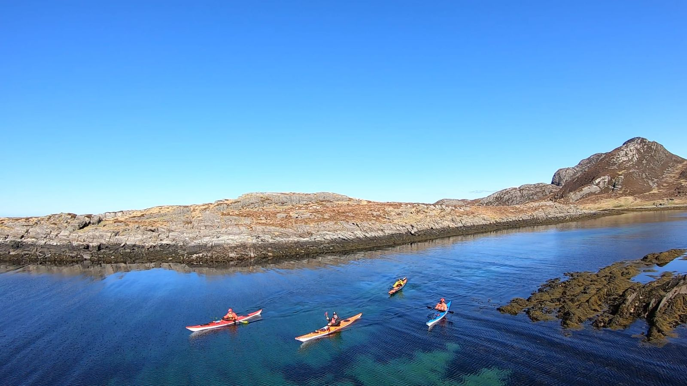

Turguide
Utforsk Sunnmørskysten fra kajakken. Her er mine favoritturer — fra rolige fjordpadlinger til krevende kystekspedisjoner.

Håndplukkede padleruter
Fra rolig skjærgårdspadling til krevende kystekspedisjoner — her finner du turer for alle nivåer og ambisjoner.
Giske rundt
En klassisk rundtur rundt Giske som byr på variert padling. Du passerer den historiske Giske kirke fra sjøsiden, padler langs åpen kyst med utsikt mot havet, og kommer tilbake gjennom roligere farvann. Turen krever stabil vær og noe erfaring.
- Giske kirke fra sjøsiden
- Dramatisk kystlinje
- Mulighet for selspotting
- Fantastisk på godværsdager
Tips: Sjekk vindvarsel nøye — vestlig vind kan gjøre vestsiden krevende. Start tidlig for å ha marginer. Ta med mat og drikke for en lang dag.
Valderøya rundt
En rolig tur i skjærgården rundt Valderøya. Perfekt for nybegynnere eller de som vil ha en avslappende padletur. Farvannet er skjermet og du padler mellom holmer og skjær med rikt fugleliv.
- Skjermet farvann
- Perfekt for nybegynnere
- Rikt fugleliv
- Flotte badeplasser
Tips: Fin ettermiddagstur. Ta med snacks og nyt en pause på en av holmene. Pass på tidevann i grunne sund.
Ålesund sentrum fra sjøsiden
Se Ålesunds berømte jugendarkitektur fra en helt ny vinkel — fra kajakken. Du padler gjennom Brosundet, langs havnen og ut mot Skanseholmen. En unik opplevelse selv for de som kjenner byen godt.
- Jugendarkitektur fra sjøsiden
- Brosundet
- Havnebassenget
- Unik byperspektiv
Tips: Vær oppmerksom på båttrafikk i havnebassenget. Morgen eller kveld gir best lys for foto. Kombinér med en kaffe på brygga etterpå.
Ellingsøyfjorden
Ellingsøyfjorden byr på rolig fjordpadling med flotte fjellformasjoner på begge sider. Farvannet er skjermet og passer godt for nybegynnere. Fjorden er også stedet for Kajakkguidens mørkepadlingsturer.
- Rolig fjordpadling
- Flotte fjellformasjoner
- Mulighet for havørn
- Perfekt for mørkepadling
Tips: Prøv fjorden på kveldstid for magisk stemning. Hold øye med himmelen — havørn er ofte å se her.
Vigra — kysten
Vigras vestside byr på ekte kystpadling med åpent hav, dønninger og dramatisk landskap. For erfarne padlere som søker utfordring. Belønningen er spektakulær natur og følelsen av å mestre elementene.
- Åpen kystpadling
- Dramatisk landskap
- Fuglefjell
- Krevende og givende
Tips: Kun for erfarne padlere i godt vær. Sjekk bølgevarsel og vindforhold nøye. Ha alltid alternativ rute. Padle aldri alene her.
Skodje og indre farvann
Skodje-området byr på stille, skjermede farvann omgitt av grønn natur. Perfekt for familieturer eller de som foretrekker rolige omgivelser. Du padler mellom holmer i indre farvann med lite bølger.
- Stille farvann
- Grønne omgivelser
- Familievennlig
- Idyllisk
Tips: Et flott alternativ når det blåser for mye på kysten. Fin for picnic på en av holmene.
Padle trygt på egenhånd
Disse turene er forslag for de som allerede har Våttkort eller tilsvarende kompetanse. Har du tatt kurs og fått Våttkort, er du klar for å utforske på egenhånd — men respekter alltid havet.
- Ny med kajakk?
Før du legger ut på egenhånd, anbefaler jeg sterkt å ta et grunnkurs. Du lærer sikkerhet, padleteknikk, sjøvett og redning — og får NPF Våttkort som kreves for utleie av kajakk.
Med Våttkort i lommen kan du leie kajakk hos Kajakkguiden og utforske alle disse turene trygt. Kursdeltakere får dessuten 100 kr rabatt per dag på utleie.
- Viktig informasjon
Disse turene er veiledende og forutsetter gode værforhold. Forholdene på sjøen kan endre seg raskt. Vurder alltid vær, vind, bølger og dine egne ferdigheter før du padler. Ved tvil — la det være, og velg en enklere rute.
Vil du ha guide?
Jeg tilbyr også guidede turer med erfaren veiledning. Perfekt for de som vil oppleve Sunnmørskysten med trygg veiledning.